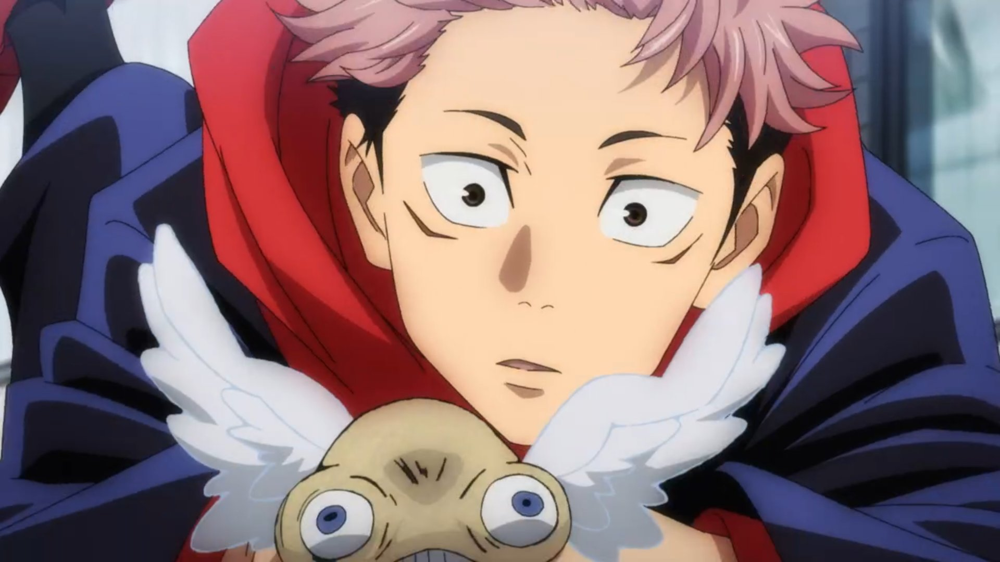

만화 주술회전의 주인공.
원래는 스기사와 마을의 고등학생으로 오컬트부에 속해 있었지만 학교 내에 있던 특급 주물인 '료멘스쿠나의 손가락'을 삼켜 자신 스스로 특급 주물이 되어버린다. 규정 상으론 처형되어야 했지만, 고죠는 이타도리가 주물의 독성을 이겨낸 것만이 아니라 스쿠나를 억누를 수 있음을 간파하고 차라리 이타도리에게 스쿠나의 신체를 전부 흡수하게 한 뒤에 처형하자고 윗선에 설득하여 일단은 목숨을 건졌다. 스쿠나의 주력에 이끌린 저주들이 해를 끼치는 것에 분노하여 다른 사람들이 불합리한 죽음이 아닌 평범한 죽음을 맞았으면 좋겠다고 생각하고, 할아버지의 '너는 강하니 사람들을 도와라'는 유언을 지키고자 주술고에 오게 된다. 본편에서는 자연에 대한 공포가 특급 주령으로 태어나서 활개치고 있다. 주술사에게서 누출되는 저주는 비술사에 비해 현저히 낮아서 주술사가 사후 저주가 되지 않는 한 주술사에게서 주령은 태어나지 않는다. 반대로 말하자면 비술사가 존재하는 한 주령들은 끊임없이 태어난다.